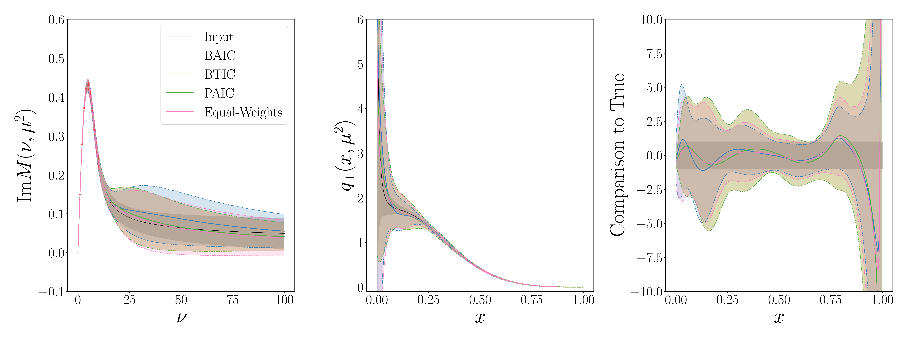
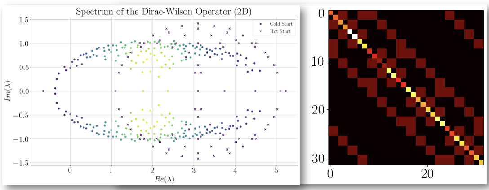

2025
Gaussian Processes for Inferring Parton Distributions
Y. Cahuana, H. Dutrieux, J. Karpie, K. Orginos, S. Zafeiropoulos
arXiv:2510.21041 →Soy candidato a PhD en Física en William & Mary, donde trabajo en métodos no perturbativos en teoría cuántica de campos. Mi investigación se centra en Lattice QCD y la aplicación de técnicas de machine learning para mejorar la eficiencia y reducir el ruido en cálculos de retículo.
Crecí en México y estudié física en la UNAM, donde mi tesis de licenciatura sobre ecuaciones del grupo de renormalización en teorías tipo Modelo Estándar obtuvo Mención Honorífica. Posteriormente realicé estancias de investigación en el MITP, investigando contribuciones inelásticas del ¹²C a asimetrías que violan paridad. Gracias a la beca Fulbright, continué mis estudios de posgrado en Jefferson Lab y aquí en W&M.
2025
Y. Cahuana, H. Dutrieux, J. Karpie, K. Orginos, S. Zafeiropoulos
arXiv:2510.21041 →Desarrollo de métodos no perturbativos para reconstruir funciones de distribución de partones a partir de datos de Lattice QCD usando procesos gaussianos.

Ver Paper →Implementación del modelo Nambu-Jona-Lasinio en el retículo usando el operador Wilson-Dirac.

Chilaquiles. Gracias a mis papás por presentarme las salteñas y el lomito salteado.